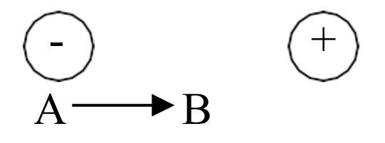
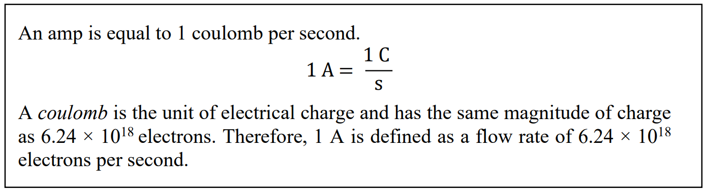
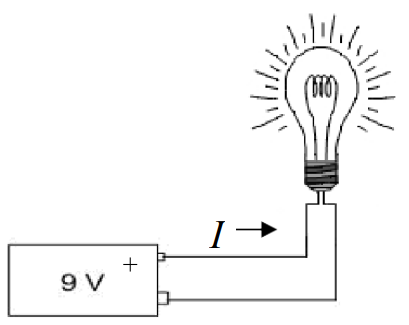
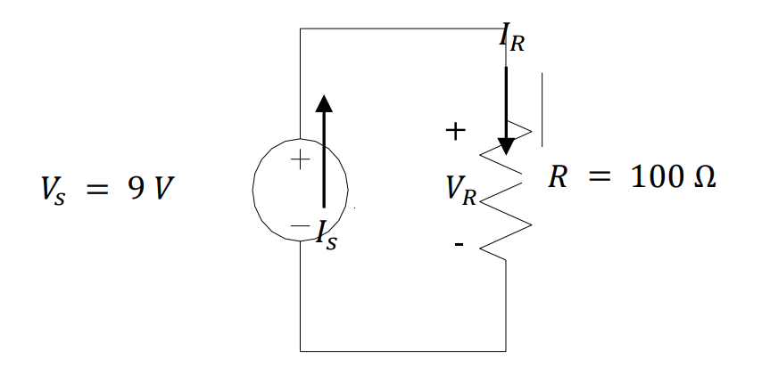

Lesson 1 – Intro to Circuits#
Learning Objectives covered in this Lesson#
I can calculate the voltages, currents, and power associated with devices in a simple DC-powered circuit using tools such as KVL, KCL, voltage and current dividers, Ohm’s Law, and the power equation.
Motivation#
We probably don’t need to convince you that electricity is useful, but perhaps it would be helpful to spend some time thinking about why you, as a future Air or Space Force officer, care about how electricity is generated, how it flows in certain systems, and why you should care about things like resistors, capacitors, inductors, transformers, AC-to-DC converters, and all the other devices we will discuss in this course. The most obvious example is an aircraft. Modern aircraft and spacecraft rely heavily on electronics for control, stability, avionics, navigation, guidance, and comfort. However, each of those devices has their own power requirements, and designing the system is a complex undertaking. As an Air or Space Force officer, it is critical to understand why your cockpit or control station looks the way it does and why the aircraft or spacecraft was built the way it was. Furthermore, in a pinch, you’ll have to do some on-the-fly load balancing, and this course will help you understand what you’re doing as you flip those switches.

Figure 1 shows part of the electrical system of a Boeing 787 Dreamliner, and it is typical of many different aircraft. Starting from the top, we see generators connected to each engine. On some level, it makes sense that you could connect some kind of device to an engine to extract electrical power from it. But, how does that actually work? Is that a perfectly efficient process? What is the difference between the type of power produced by a generator (Alternating Current) and the type of power required by most of the electronics on the aircraft (Direct Current)? The lessons on Engines, Generators, and AC-to-DC conversion will hit on these key topics.
Moving down, we see several different voltage levels – how do we design the system such that the right voltage level and type gets to the right electronics? Furthermore, how do we protect those electronics from drawing too much power? The Power I and II lessons will describe how this happens and discuss all the considerations of designing a power distribution system.
Finally, when it comes to the loads (i.e., what’s using the power) – how do we interpret quantities like voltage, current, and power? How can we model these loads in a meaningful way and, furthermore, how does the way in which we connect these loads affect the system as a whole? These are all things we’ll discuss in the Introduction to Circuits lessons.
Electric Charges and Voltage#
Hopefully, you already know what would happen if you connected a 9-Volt (V) battery to a simple light bulb. As long as the battery was sufficiently charged and the wires connected correctly, you would probably expect electrons to flow from the battery and through the filament inside the bulb, causing the bulb itself to glow.

If we were interested in the chemistry or physics involved, we could discuss how the various metals inside the battery cause the electrons to flow or why the flowing electrons cause the filament to glow. We could even measure the brightness of the light and describe it using some unit of illumination. While these things are interesting, we will focus on applications of these principles in this course.
To understand what’s going on in our light bulb circuit—or anything else in the exciting world of electrical engineering—we need to briefly discuss electric charges.
You probably already know electrons have a negative charge (-) and protons have a positive charge (+). Accordingly, any atom or molecule with more electrons than protons would have a negative charge while any atom or molecule with more protons than electrons would have a positive charge.
We refer to the flow of these charged particles through a conductive medium, such as a wire, as current. It takes work (or energy) to separate electrons from atoms, and once these electrons have been separated from their atoms, they flow through conductive media, thereby producing current. When we use electricity to do something, such as turning on a light bulb or heating up our food in a microwave, we are really just getting this energy back in a different form.
To describe how electricity can be used to do work, let’s start by taking a single negative charge and placing it near a single positive charge:

Because the charges are opposite, they will attract, meaning there will be a measurable force that pulls the two charges towards each other.
Voltage, which is one of the fundamental concepts in electrical engineering, is simply a way to describe this force between the opposite charges.
To explain what we mean by this, let’s say the negative charge is actually an electron and the positive charge is some positive ion that is fixed in place. Let’s also say we want the electron to move from point A to point B:

Like everything else in the world, an electron doesn’t move unless some energy (or work) is expended to make it move. Fortunately, in this case, we don’t have to expend energy to make the electron move because there is already another force, known as the electromagnetic force, that will expend the energy for us. As we said earlier, opposite charges attract, and this attraction is due to the electromagnetic force between the positive and negative charges. This attraction is will expend energy to move the electron from point A to point B. This may seem like free energy, but this is just how the electromagnetic force works! If we carefully measured the amount of work (or energy) expended by the electromagnetic force to move the electron from point A to point B and divided this amount by the charge of the electron being moved, we would get the voltage required to move the electron from point A to B.
Mathematically, we can express this definition for voltage as
In other words, voltage is the amount of work required (\(dw\)) per unit of charge (\(dq\)) to move a charge from one point to another.
So what does this mean?
As it turns out, the way electricity flows is very similar to the way water flows from the water tower to your house. Consider what happens when you connect a hose to a water faucet. When you turn the faucet on, the water pressure from the pipes in your house pushes water through the hose. That pressure comes from the water tower – which uses the gravitational potential energy created by holding the water hundreds of feet above the ground to generate a city’s water pressure. For this analogy, we can think of the water tower as the voltage in a circuit because, much like how the water tower’s potential energy creates water pressure, the voltage represents an electric potential that creates “pressure” for electrons to move. Just as a taller water tower has a higher gravitational potential energy and can create more water pressure, a larger voltage level has a higher electric potential and can create more “pressure” for electrons to move. Figure 3 demonstrates this analogy.

When you hook some wires up to a battery, the voltage “pressure” causes electrons to flow through the wire (as long as the path makes a complete circuit back to the other battery terminal).
We measure this “pressure” with the unit volts. As you might expect, the more volts we have, the higher the “pressure”. A 9-V battery has twice the “pressure” of a 4.5-V battery and, therefore, causes twice as many electrons to pass through our light bulb each second, making it brighter.
Before we move on and talk about current, we need to stress two things about voltage: voltage is always measured between two points and exists even if nothing is flowing.
First, voltage is always measured between two points. For this reason, we often talk about the voltage across a device. The voltage across our light bulb, for instance, tells us how much work is actually being done (per unit charge) to move electrons from one end of the filament to the other. From our water analogy, we reference the potential of the water with respect to its height above ground. In electrical engineering, we usually measure voltage with respect to the zero voltage point (conveniently called “ground”).
Second, voltage exists even if nothing is flowing. This is a subtle, but important point. Voltage doesn’t measure the movement of electrons, but rather, the pressure that causes (or would cause) electrons to move. Put simply, voltage has the “potential” to move electrons if we choose connect wires to the device providing the voltage. For this reason, voltage is sometimes referred to as electric potential. Our water analogy holds here as well. If we were to close the pipes leading to someone’s house, no water would flow into the house, but there would still be water pressure in the pipes leading to the house. Likewise, a battery has voltage, even if it is not connected and no current is flowing.

Current, Power, and Resistance#
We know that voltage applies a “pressure” to move electrons, and once we hook a device that supplies a voltage, such as a battery, up to a circuit, electrons begin to flow through the wires. This flow of electrons is known as current, and current tells us how many electrons actually move when a voltage is applied to a circuit. More specifically, current tells us how many electrons move in a set period of time. Mathematically, we use the letter I to represent current, which is defined by the equation
\[I = \ \frac{dq}{dt}\]In words, current measures the amount of charge (dq) that passes through a specific point in a given amount of time (dt).
If you think of current as measuring how many electrons flow per second, you have the right idea. The unit of current is the ampere (often shortened to amp) and is abbreviated as “A”. The more amps you have, the more electrons that flow. As you might expect, a current of 9 A has three times as many flowing electrons as a current of 3 A.
In keeping with our water analogy, we can imagine placing a water flow meter in the middle of the pipe at the bottom of a water tower. This meter would tell us how many “water molecules” went by over a given time. This is the same as how we measure electrical current.
Figure 4: Current in water flowThis brings us to a key point: current is always measured through a single point. Therefore, if we say that the current through a light bulb is 2 A, what we really mean is that the current through any point in the light bulb’s filament is 2 A. There are many things that can affect how much current flows through a wire, and we will explore these things later on in this lesson and in future lessons.

When men like Benjamin Franklin were trying to make sense of electricity, they defined current in a way that is a bit confusing, and that definition has stuck to this day. When we connect a battery to a light bulb, we say that the current flows from the positive terminal (+), through the bulb, and then back to the negative terminal (-).
The arrow in Figure 5 shows the direction of current flow in accordance with our definition. However, something is wrong with this. We know that current is the flow of electrons, and we know that electrons have a negative charge. Wouldn’t a negatively charged electron be attracted to the positive terminalrather than repelled by it? If this is what you were thinking, then you are exactly right. When we connect a battery to a light bulb, what really happens is that the electrons leave the negative terminal (-), flow through the light bulb, and then return to the positive terminal (+).

Figure 5: Current flowing from a 9 V battery into a simple light bulbThis can get really confusing, but the good news is that it really doesn’t matter. We just say that the current flows in one direction when the electrons actually flow in the opposite direction. If you simply follow the convention that current flows from positive to negative (or higher voltage to lower voltage), you’ll be okay.
Power and Resistance
Voltage and current are fundamental to ECE, but there is much more to ECE than just understanding this relationship.
Think back to our water hose analogy. It’s nice that we have lots of water pressure in our pipes, but if we never turn on the faucet, nothing would ever get done. Likewise, we could open the faucet to let water flow through the hose, but if we don’t do something with the water, then the water is wasted.
It’s all about doing. We take a shower. We wash the car. We fill up a water balloon.
In the electrical world, we use the term power to measure the work that gets done per unit time. We light up a room. We toast some bread. We use a computer. All of these require power, which is defined by the equation
\[P = \ \frac{dw}{dt}\]In terms of our light bulb, power is the energy consumed (\(dw\)) by the bulb in a given amount of time (\(dt\)). Since energy and work use the same units, we can also say that power measures the work that is done in a given amount of time.
The unit of power is the watt (W), which is equivalent to joules per second. Therefore, a 100-W light bulb consumes 100 joules of energy per second. A 50-W bulb consumes 50 joules per second.
So what do current and voltage have to do with power? The short answer is everything. To explain, let’s review the definitions for both current and voltage:
\[I = \ \frac{dq}{dt}\ \ \ \ \ \ \ \ \ \ \ \ \ \ \ \ \ \ \ \ V = \ \frac{dw}{dq}\]Notice what happens when we multiply these together:
\[IV = \ \left( \frac{dq}{dt} \right)\left( \frac{dw}{dq} \right) = \frac{dw}{dt} = P\]In other words,
\[P\ = \ IV\]Power is equal to current times voltage. This equation is called the Power Equation and is very useful. You will use this equation in ECE and throughout your life.

Example Problem: The filament of a light bulb has 9 V placed across it, which causes 90 mA to flow through it. How much power does the bulb consume?

Understand: The power consumed by a light bulb depends on the current through it and the voltage across it.
Identify:
Knowns: 9V of potential is lost (dropped) across the bulb and 90mA of current is flowing through it
Unknowns: Power consumed by the bulb
Assumptions: None.
Plan: Since we know both the current through the filament and the voltage across it, we can use the Power Equation to find the power:
Solve:
Answer: The light bulb consumes 810 mW of power.
This example problem illustrates the notion that power is the product of current and voltage, but it doesn’t quite explain what’s actually going on in the circuit. The scenario implies we can control both the current through and the voltage across the light bulb, which isn’t the case. In simple circuits like these, we can control the current or the voltage, but not both.
The key to understanding what is really going on is the concept of resistance. The filament of a light bulb is designed to resist the flow of electrons in order to generate heat, which causes the filament to glow white-hot, thereby emitting light. This is because, as electrons flow through the filament, they bounce off of atoms in the filament and lose energy. When enough energy is lost to the filament, it heats up and eventually glows. Mathematically, we use R for resistance, which is defined by the equation
This equation is known as Ohm’s Law, which is more commonly written as,
We measure resistance using ohms (Ω). A device that has 200 Ω resists the flow of electricity twice as much as a 100 Ω device.
What does this mean?
Think about our water tower and the pipes that carry the water to your house. As with most faucets, we can control the flow of water depending on how much we open the outlet valve. In other words, we decrease the resistance to the flow of water (current) by making the opening bigger, which allows more water to flow. When we start to close the valve, we increase the resistance by causing the opening to get smaller and, therefore, less water flows.
One important point about Ohm’s Law is that it only works with devices that can be modeled as resistors. Later on, when we start dealing with transformers and other non-resistive devices, we will have to use other tools to solve for voltages and currents.
Example Problem 1: The filament of a light bulb has a resistance of 100 Ω. If 9 V are placed across it, how much power does the bulb consume?
 R = 100 Ω
R = 100 Ω
Understand: We want to find out how much power (energy per second) the bulb consumes.
Identify:
Knowns: 9V of potential is lost (dropped) across the bulb, the resistance of the bulb is 100 Ω
Unknowns: Power consumed by the bulb, current flow through the bulb
Assumptions: None.
Plan: We want to solve for the power using the power equation, ùëÉ = ùêºùëâ
However, we must first find the current using Ohm’s Law, \(I = \ \frac{V}{R}\)
Solve: First, we will solve for the current.
Then, we can use the current we found to solve for the power consumed.
Answer: The light bulb consumes 810 mW of power.
Basic Electrical Devices and Examples#
Hopefully, you now understand what happens when we connect a battery to a light bulb – the battery provides a voltage “pressure” that causes electrons to flow. The filament resists the flow, which determines the actual current. The voltage and current determine the power consumed by the bulb.
Now we have to figure out how to predict what will happen when we start changing things. To do this, we’re going to change how we model the devices in our circuit.
First, we’ll model the voltage source with the following symbol:
Notice the positive (+) and negative (-) terminals on the voltage source. As you might expect, the “pressure” at the positive terminal is higher than the “pressure” at the negative one. Therefore, the current flows out of the positive terminal and returns to the negative.
We will model the light bulb as a resistor. Exactly as the name implies, a resistor is a device that resists the flow of electricity. As with the previous example problem, we’ll assume the light bulb has a resistance of 100 Ω.
Using these devices, we can redraw our battery and light bulb as the circuit below. We added some arrows with labels to show the currents coming out of the voltage source and passing through the resistor. We also labeled the voltage across the resistor, \(V\)R, and the current through the resistor, \(I\)R.

Notice the polarity (where we put the + and -) of the resistor. As with the voltage source, we label the side with the greater pressure as positive (+) and the side with the lower pressure as negative (-).
Also, notice the relationship between the polarity of the devices and the current flow. In the voltage source, current comes out of the positive terminal, but in the resistor, current flows into the positive terminal.
If this isn’t making sense, think about the voltage source as a water pump pushing water through the circuit. The resistor, then, represents everything that tries to slow the water down. The arrows represent the direction of water flow. The polarity labels (+ and -) represent relative pressure. The pressure is always higher coming out of a pump than going into it. Likewise, the pressure is always higher going into a resistor than coming out of it.
It is important to remember that when we draw circuits, we are just creating models of real devices. We model an electrical device for what it does, rather than what it is. What a 9-V battery does is provide 9 volts, therefore we model it as a 9 V power source.
This allows us to replace the battery with anything that provides 9 V without changing what happens to the circuit. For example, we could use multiple smaller batteries or a device called an AC-DC converter (more on this in Block II) to produce a 9-V output, and it wouldn’t matter. The current and power would be the same.
Unfortunately, we also lose something whenever we create models. Because of cost or weight or convenience constraints, it might actually matter what kind of power source we use. These issues are lost in the circuit model and need to be tracked separately.
Additionally, the model doesn’t fully represent what happens in a real circuit. First of all, there are inherent errors associated with real devices. A real 100 Ω resistor, for example, might have an actual resistance of 96.7 Ω. Likewise, even if a 9-V battery actually provided 9 volts, it would not do so forever. Over time, a battery will lose energy and the voltage will drop, if only slightly.
For much of electrical engineering, modeling circuits using ideal devices helps to simplify the analysis so that we can solve a given problem more quickly. The term ideal implies zero error and 100% efficiency. Although there is always error, the error when modeling ideal devices is usually small enough to have negligible impacts on our final answer. In this course, we will mostly use ideal devices in our analyses.
Believe it or not, you now have all the tools you need to predict what will happen to a wide variety circuits consisting of one voltage source and one light bulb.

Example Problem 2: A light bulb with a resistance of 200 Ω is connected to a 3-V battery, as modeled in the circuit below. If the wiring in the flashlight is limited to 20 mA, will the flashlight function as designed?

Understand: The light bulb is drawing current but is limited by how much current the wiring can support.
Identify:
Knowns: The light bulb is connected to a 3V voltage source and has a resistance of 200 Ω
Unknowns: Current flow through the bulb
Assumptions: The light bulb can be modeled as a resistor and is using all 3V. All the current flowing through the bulb is flowing through the wiring.
Plan: If the actual current is 20.00 mA or less, the flashlight will work. If it is greater than 20 mA, the wire will burn up, ruining the flashlight. So, we will find the current through the bulb using Ohm’s Law (V=IR).
Solve: The current drawn by the light bulb is:
Therefore the current through the bulb (modeled as a resistor) is 15 mA.
Answer: Yes, the flashlight will work as designed since the current in the circuit is only 15 mA, which is less than the 20 mA limit.
Example Problem 3: Two competing flashlight designs are modeled below. If the sole measure of merit is to minimize power consumption, which of the two is the better design?

Understand: This problem is very similar to previous problems, but now requires us to find the power consumed by two different flashlight designs.
Identify:
Knowns: We know the voltage supplied by each source and the resistance of each bulb.
Unknowns: Power consumed by each bulb.
Assumptions: The light bulbs can be modeled as a resistor and are using all the voltage (potential) provided by the source. Since power consumption is our sole measure of merit, then the option with the lesser power consumption will be the better option.
Plan: We could calculate the current through each bulb, and then the power, but there is a quicker way. If we substitute Ohm’s Law into the Power Equation, we can arrive at an equation that solves for power in terms of only voltage and resistance.
First, we start with both the Power Equation and Ohm’s Law.
Next, we solve Ohm’s Law for \(I\) to get:
Then, we can substitute this into the Power Equation:
Finally, we can compare the power consumption of the two options.
Solve: Let’s first solve for the power consumed by Option A:
Now, solving for the power consumed by Option B:
Answer: Option B is the better design because it consumes 720 mW, which is less than the 900 mW consumed by Option A.
For simple problems like the one we just solved, the decision is obvious as soon as the comparison is made. However, in engineering (and many other pursuits), it is not enough to reach the right decision. We must also adequately articulate the decision so that others can understand it and act accordingly. Therefore, our answer is not “Option B,” but rather “Option B is the better design because it consumes 720 mW, which is less than the 900 mW consumed by Option A.” Communication is very important in all aspects of life, especially engineering.